Names the exact 9 p.m. moment she recognizes.
PRIVATE FIRST LOOK Built behind the scenes for Brittany
Your work has always changed lives.
Now it has a visual language.
You have spent years learning why women struggle with food, weight, safety and self-worth. We have been building the pictures that help them finally see it—and stop blaming themselves.
This is not a gallery of pretty pictures. It is the beginning of an explanation system.

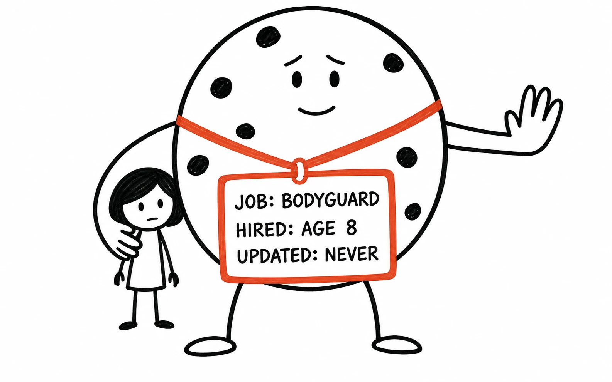
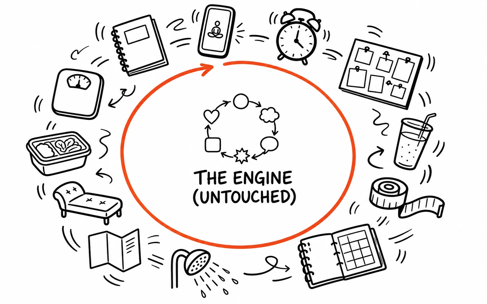
Brittany's ideas,
made visible.↙
made visible.↙
THE REAL REVEAL
That letter wasn’t the project.
That letter wasn’t the project.
It was the proof.
Jimmy has been mining your classes, stories, analogies, coaching moments and repeated explanations—not to create more content, but to find the clearest ways to make your ideas unforgettable.
The manifesto is the first finished demonstration of what happens when the copy, the teaching and the visual all carry the same belief.
100visual ideas
in batch one
in batch one
94first-sprint doodles
rendered below
rendered below
60mini-lessons
structured
structured
17manifesto visuals
completed
completed
100VISUAL IDEAS
IN THE FIRST BATCH
IN THE FIRST BATCH
BEFORE THE LETTER · THE FIRST SPRINT
This did not begin
This did not begin
with three pretty pictures.
We mined Brittany’s classes, stories, analogies and coaching moments, then started turning the invisible ideas into things a woman could see. Ninety-four of those first-sprint renders are on this wall.
THE ORIGINAL VISUAL HARVEST94 rendered doodles · one connected body of work
THEN THE BREAKTHROUGH HAPPENED
We stopped drawing ideas in isolation.
We stopped drawing ideas in isolation.
We let the whole letter become the art direction.
The pictures gained context, timing and heart. They stopped merely explaining Brittany’s ideas—and started carrying the reader through them.
See what changed ↓
CHAPTER 01 · THE PROOF
One letter.
One letter.
Seventeen belief shifts made visible.
The copy carries the argument.
The drawing gives the reader the moment she can remember, repeat and share.
The image does not replace the explanation.
It makes the explanation land.
CHAPTER 02 · THE KEYSTONE VAULT
A visual language women
A visual language women
can carry with them.
The best pictures become shortcuts to entire ideas.
One glance can bring the whole explanation back.
20 concept doors open · click any drawing to see the belief it carries
Idea Lab note: These are deliberately shown as concept prototypes. The point is to choose the ideas worth owning—then polish the winners into permanent Brittany keystones.
CHAPTER 03 · MINI-LESSONS
Some ideas need a story.
Some ideas need a story.
Not an icon.
A difficult idea can unfold across two, three or four simple pictures. Each frame does one job; the sequence creates the understanding.
THE MULTIPLIER
One big idea.
One big idea.
Every place you teach.
Once an explanation and its visual are built correctly, they stop being “content.” They become reusable intellectual property.
ONEBIG IDEA
ARTICLE
WEBINAR
YOUTUBE
SALES LETTER
SOCIAL
EMAIL
CURRICULUM
STAGE
CHAPTER 05 · THE MACHINE
One map.
One map.
A hundred doorways.
Every email, video, post and stage teaching can open into the same connected world.
She chooses the doorway. The system keeps helping her reach the same truth.
“People believe what they are told.
They never doubt what they conclude.”
The ecosystem is designed to let her assemble the conclusion herself.
THE WHOLE MACHINE
Choose where she finds Brittany.
Watch one doorway become a complete belief journey.
LEARNSTORIESSCIENCETHRIVE
The doodle, real stories, evidence and next step live together.
 “This is not a willpower problem.”
“This is not a willpower problem.”
She was not pushed through a funnel. She followed her own curiosity—and every page became another witness.
ONE ORDINARY EXAMPLE
Anatomy of one Tuesday email
Four natural rabbit holes. She chooses her own depth.
From: BrittanySubject: the 9pm kitchen isn’t about hunger
Last night a student told me she stood in front of the pantry, not hungry, almost in a trance. If that’s you—you’re not broken. That trance has a name, and here’s the picture that explains it.
Hundreds of women in this community have stood in that exact spot. Read their stories—find the one that sounds like yours.
And if you want the research on why willpower loses at 9pm every time, the science is here.
Ready to actually unhook it? This is the program. One conversation starts it.
— B
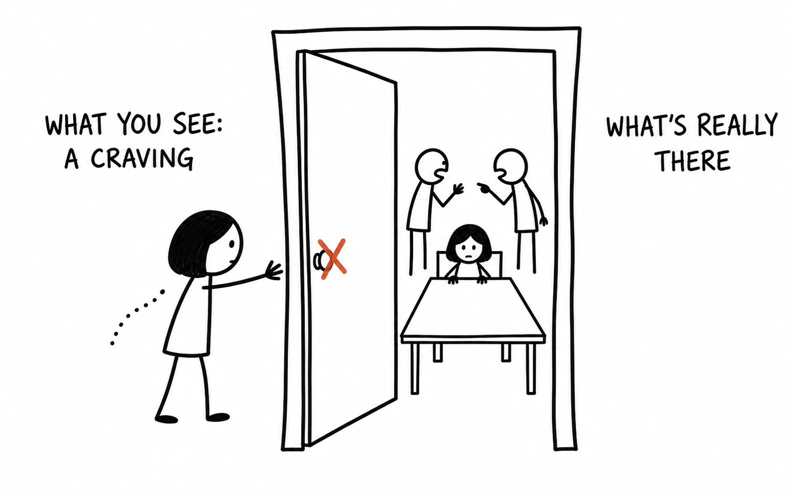
The Emotional-Eating Explainer
LEARNThe illustrated article—the doorway doodle, the loop, the map.
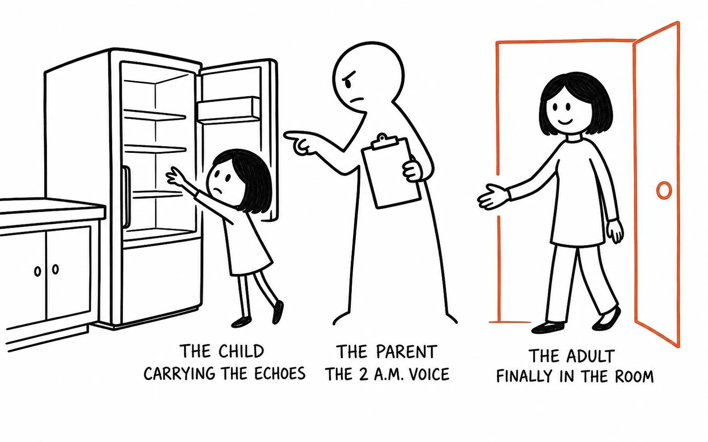
Stories Like Yours
STORIESTestimonials and case studies filtered to emotional eating.
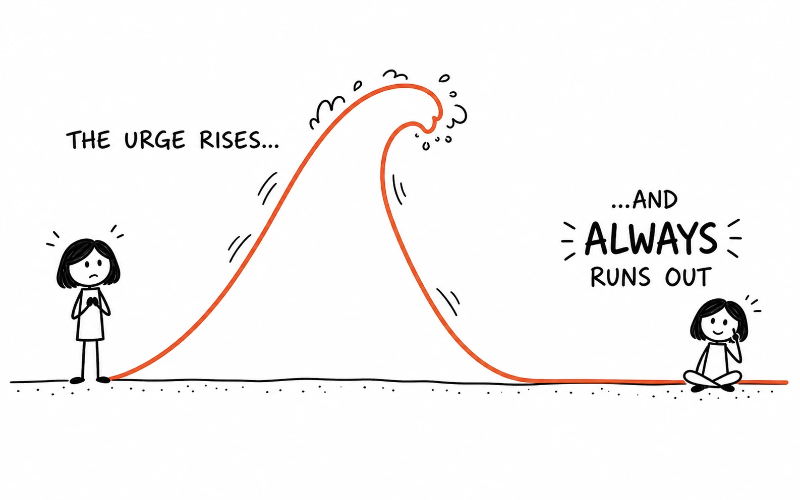
The Science Page
SCIENCECravings, stress and the wave—the evidence told warmly.
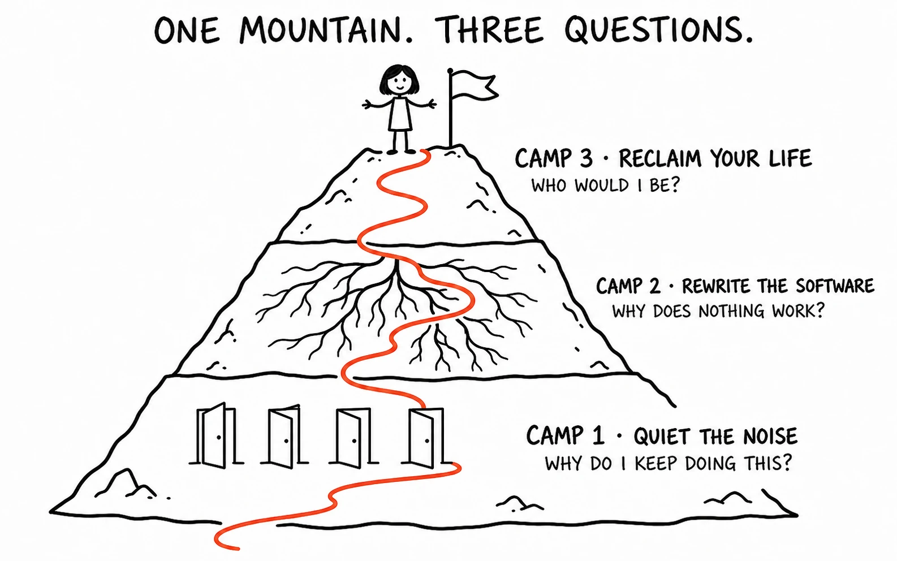
The Program
THRIVEOne mountain, three questions—and the door in.
She wasn’t pitched. She wandered—and every path helped the same map make more sense.
THE COMPLETE CHAIN
From one sentence
From one sentence
to an entire universe.
The missing bridge between Brittany’s raw teaching and a library that compounds.
“Food may be the part of you trying to keep you safe.”A line from a class, call or coaching moment.
THE DEFINITIVE EXPLAINERThe Many Jobs of Food
Why comfort eating is not proof that you are weak.
EMAILVIDEOWEBINARBOOKSOCIAL
One belief. Every place Brittany teaches.“I’m not broken.That is the transformation.
This was trying to protect me.”
WHY THE SYSTEM CONVERTS
She is not merely told.
She is not merely told.
She assembles it herself.
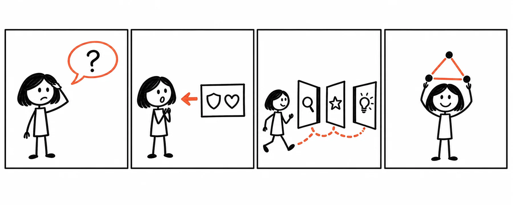
A belief she is told, she can doubt.
A belief she concluded, she will defend.
WHAT THIS MAKES BRITTANY
The woman who makes the inner life
The woman who makes the inner life
of women easy to see.
The letter is the proof. The hub is the home. The doodles are the language. The Grand Map is the worldview every piece quietly teaches.
Not more content. One map, wearing a hundred doorways.
CHAPTER 06 · THE FUTURE, BOUND
The book her audience
The book her audience
has been waiting for.
The manifesto proves the format. The book turns that format into a world she can hold, lend to a sister and keep on her nightstand.
FOR THE WOMAN WHO HAS TRIED EVERYTHING
IT’S NOT
IT’S NOT
YOUR FAULT
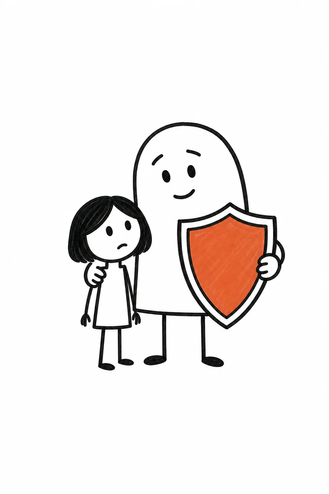
Why food, weight and self-sabotage were never simply willpower problems
BRITTANY WATKINS
THE ENDGAME ARTIFACT
Her worldview,
Her worldview,
made unforgettable.
Each chapter follows one station of the Grand Map: warm explanation, one familiar bridge, one visual revelation and just enough evidence to quiet the doubt.
A sales letter asks for trust. A book on her nightstand earns it—chapter after chapter, conclusion after conclusion.
The twelve-part Operating Manual is no longer only an article plan. It becomes the book’s spine—and the content spine for everything else.
OPEN IT
Three moments from the journey
The hook. The machine. The whole-life expansion.
CHAPTER ONE
Two Women, One Casserole
Two sisters grow up in the same house, eat the same dinners and inherit the same recipes. One spends her adult life at war with her body. The other stays effortlessly slim and cannot understand what the fuss is about.
Same food. Same house. Different outcome. Which means something besides food is deciding.
This book is about that something—where it lives, how it got there and why every diet was aimed at the wrong address.
2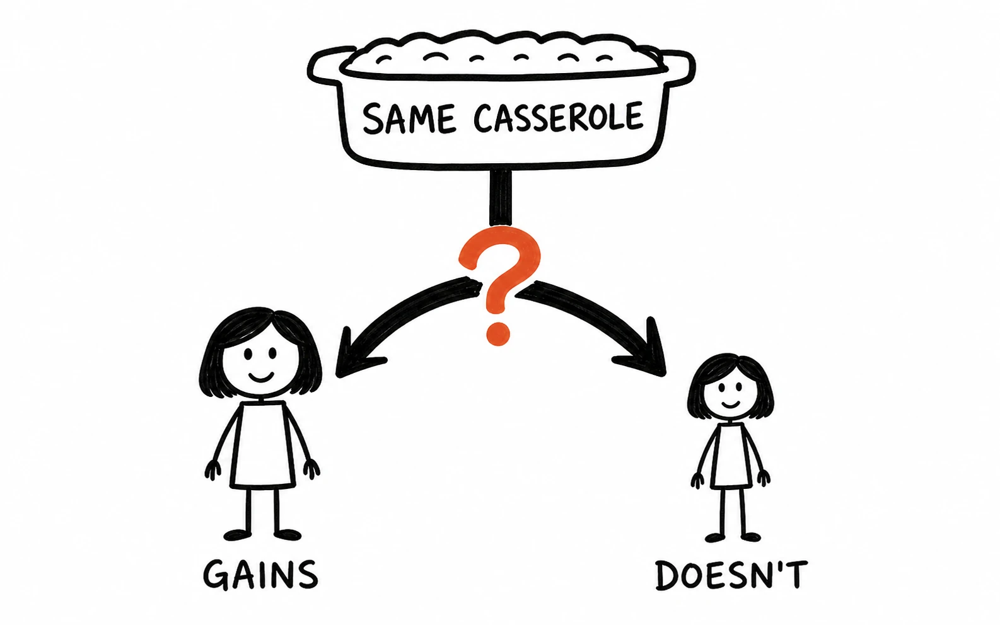
If any diet actually fixed the something, there would be no next month’s magazine cover.
“What is wrong with me?” Nothing, it turns out. But something specific is running.3
CHAPTER FIVE
The Machine Nobody Showed You
Put the six stations together: a moment, an echo, a rule, a protector, a pattern and a price—with shame wiring the price back to the start.
You never had a willpower problem.
You have a safety system running on old information.
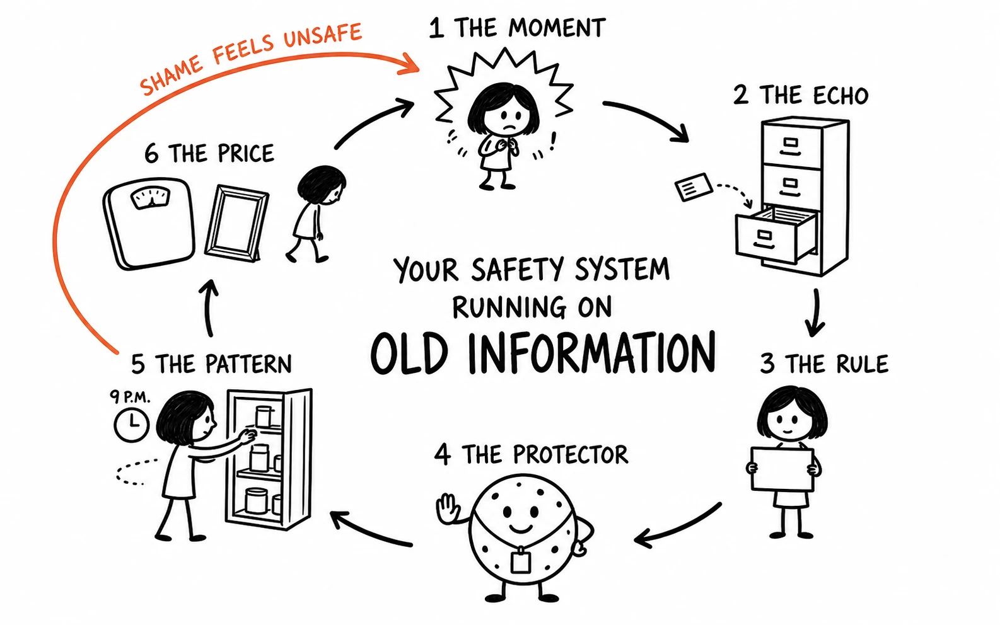
The full signature spread—the page readers photograph, share and return to.
CHAPTER NINE
The Fences Everywhere
Here is the part nobody warns you about. The pantry fence was just the one you could see.
Career, marriage, money, your voice, being seen, wanting things out loud. Around each one, the same faint dashed line.
And one gate, standing open, with nobody walking through it.214
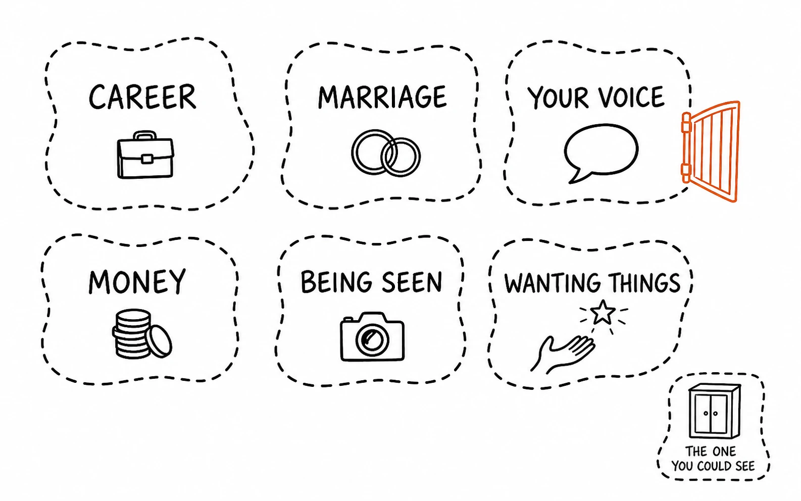
This is why women who finish the work keep using a word that has nothing to do with food.
Not “thinner.” Free.215
They don’t shrink. They thrive.
The easiest way to let a stranger experience the worldview before anyone asks her to buy.
Amazon, podcast tours, client gifts and the object women lend to their sisters.
Every chapter is already an article, video, webinar module, email run and stage teaching.
CHAPTER 07 · THE VISUAL DNA
The rules that make every new idea
The rules that make every new idea
feel unmistakably Brittany.
The style is locked so the brand becomes more recognizable—not more random—with every new explanation.
One belief.
If the belief cannot be stated in one sentence, the drawing is not ready.
leads.
Build the perfect argument first. Draw only what helps the belief land.
bridge.
A parking brake, tiny rope or old alarm makes an invisible idea feel obvious.
revelation.
The accent color points to the precise element carrying the “oh.”
Deep sequence.
Never cram a lecture into one image. Let a story unfold one beat at a time.
Same world.
Recurring people, objects and metaphors turn separate pieces into one visual universe.
THE BUILD MAP
This is not a someday idea.
This is not a someday idea.
The machine is already running.
Copy and visuals working as one belief-changing experience.
Permanent metaphors for food, protection, self-worth and the whole life.
Stories and sequences that explain the questions women ask repeatedly.
The first connected journey through Brittany's worldview.
Every doorway connects to one hub and one recognizable worldview.
The Grand Map becomes the book, the authority artifact and the content spine.
A living library women can enter from every sales letter, email and video.
A note from Jimmy
Brittany—this is the thing I keep trying to explain.
You already have the ideas. You already understand these women in a way almost nobody else does.
I’ve been trying to build the world around those ideas so women can finally see what you see—and so your name becomes attached to the explanations that change how they understand themselves.
The letter is one example. This is what happens when we build all of it.
This is only the beginning.
— Jimmy
THE POSSIBILITY
When a woman finally sees
When a woman finally sees
why she does what she does…
she stops asking, “What is wrong with me?”
That is the world we can build. Walk through it again ↑